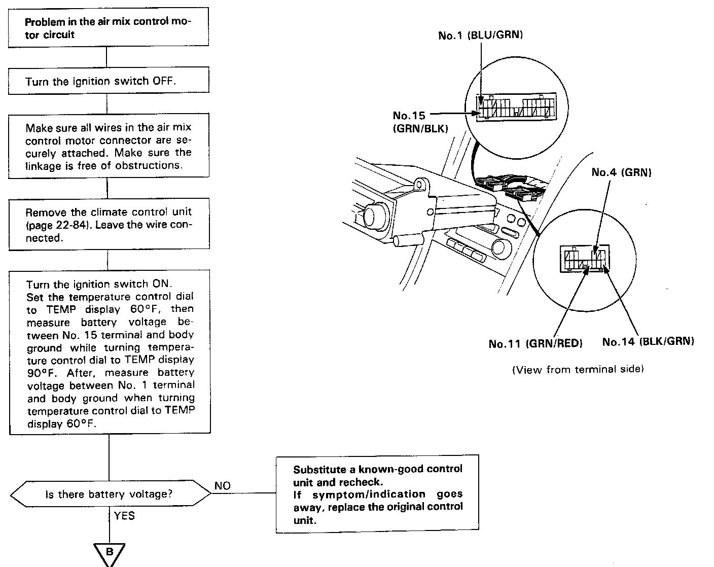
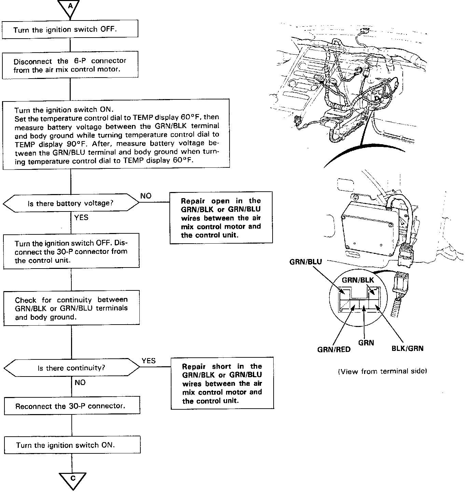
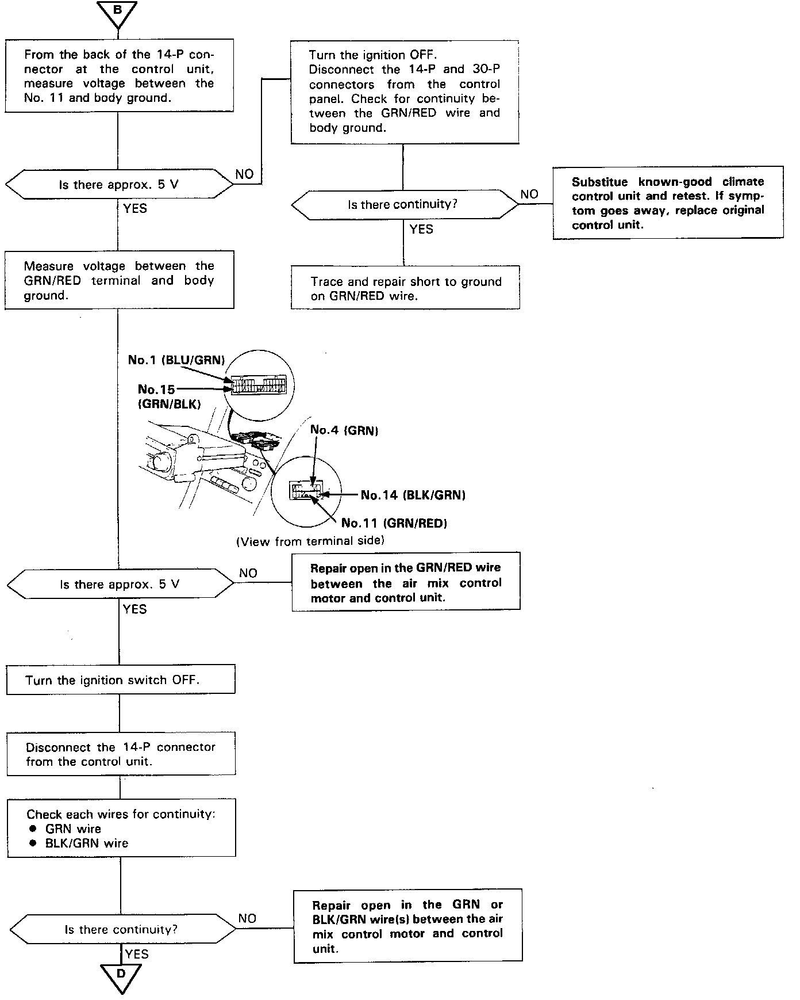
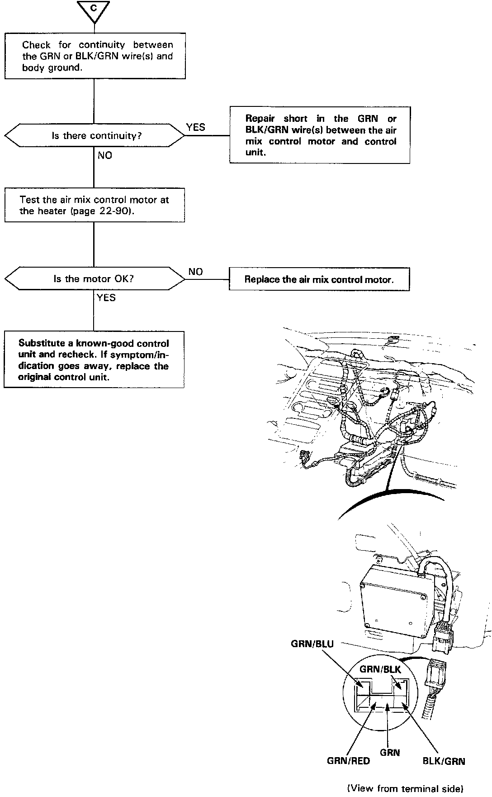

Air Mix Control Motor
Air Mix Control MotorSelf-diagnosis indicator light F comes on: Indicates a problem in the air mix control motor circuit. Use a digital multimeter (KS-AHM-32-003) to check it.
The air mix control motor regulates the mixture of cold/hot air according to output from the control unit.
Part A:

Part B:

Part C:

Part D:
